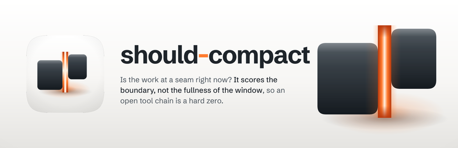
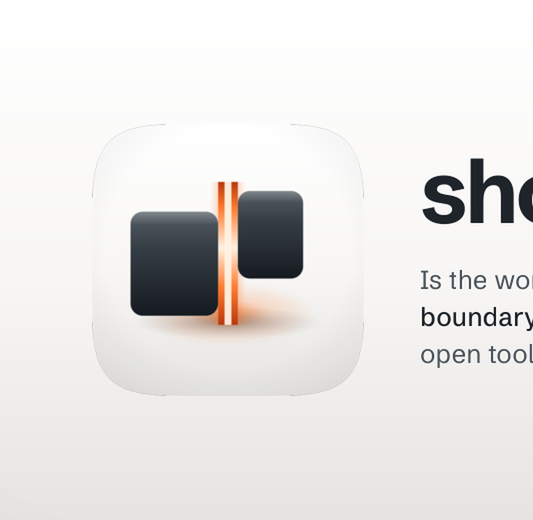

Every size a person actually meets this banner at, then the 12-point rubric. Delivery bar is 10 of 12 with checks 1, 2, 3, 7 and 12 non-negotiable. 5 of 5 mechanical checks pass and 7 still need a human verdict, which is what the renders above are for.


| # | Check | Verdict | Evidence |
|---|---|---|---|
| 1 | Exactly 3200x1040, from a 1600x520 layout at deviceScaleFactor 2 (non-negotiable) | pass | 3200x1040 |
| 2 | The plugin's real icon asset, referenced rather than redrawn (non-negotiable) | pass | 1 artwork reference inlined as a data URI, which is how a file:// render loads it at all |
| 3 | The wordmark is set in a linked web font, not a local system face (non-negotiable) | pass | loads Schibsted Grotesk |
| 4 | Ground register agrees with the icon it sits beside | — | judged by eye on the renders above; fill this in |
| 5 | One warm accent, carried from the icon's own accent constant | — | judged by eye on the renders above; fill this in |
| 6 | Composition derived from the icon's build script, not eyeballed from a sibling | — | judged by eye on the renders above; fill this in |
| 7 | One essence line, no em dash (non-negotiable) | pass | no em dash in the copy |
| 8 | Nothing overflows the frame | — | judged by eye on the renders above; fill this in |
| 9 | Wordmark and essence line both legible at 900px | — | judged by eye on the renders above; fill this in |
| 10 | Wordmark legible at 400px | — | judged by eye on the renders above; fill this in |
| 11 | No element illegibly overlapping another | — | judged by eye on the renders above; fill this in |
| 12 | banner-src retained, so the banner stays editable (non-negotiable) | pass | banner-src.html |
5 / 12
**Ships.** The device keeps the icon's argument intact: two graphite masses side by side, and the focal element between them is empty. The seam is drawn behind both masses and overrun at each end so the blocks set its extent, it has no cap, no outline and no capsule anywhere in the source, and nothing in this banner fills it. The right mass keeps `RIGHT_LIFT`, so the pair still reads as held mid-step rather than closed.
Wordmark is Schibsted Grotesk at 700, matching resume-session. That is the skill on the other side of this same boundary: this one says when the session may be cut, that one picks it back up, and the pair now shares a face. It is already in the family at three uses, so it adds nothing to the twelve the audit counted. Instrument Sans, the group's plurality, was the alternative and would have been equally defensible on count; the tie went to the neighbour that shares the subject. The immediate visual sibling is braindump, which the icon was deliberately paired with on material and opposed on shape, but braindump sets its wordmark in JetBrains Mono, and a mono wordmark carries a terminal flavour this skill does not have.
Derived from `build_icon.py` at k = 0.64 throughout. `BLOCK_W_L` 330 : `SEAM_W` 74 : `BLOCK_W_R` 246 with heights `BLOCK_H` 392 and `BLOCK_H_R` 330, `RIGHT_LIFT` 78 and `R_SHOULDER` 46. Ground is `GROUND_TOP` / `GROUND_MID` at 0.55 / `GROUND_BOT`, vertical because this icon's key is directly overhead, plus its own vignette at cx 0.5 cy 0.46 r 0.72 and 0.07 black from offset 0.62. The masses carry the `GRAPHITE` ramp at its own four stops and the icon's soft top-edge light with no hard specular anywhere. The bloom and contact ellipses keep rx 330 / ry 120 and rx 352 / ry 62. The ground is neutral, not the family's warm porcelain, because this icon's ground was sampled cool and it stays cool: that is a real difference from anvil-errand's tile and it would have been lost by copying a sibling. The hyphen is the only warm mark in the type and it is `SEAM_MID`, sitting where the icon puts its light, between the two masses.
Three deliberate departures from a literal scale-down, all of them visible in the source. First, the icon lays a hard `SEAM_CORE` column over a vertical edge-to-core ramp; at 74px of 1024 those read as one gap of light, but at 47px on a 1600 bench the hard column separates out and the seam starts reading as a striped object, which is the exact failure the icon's own notes record. The same intensity field is drawn as one soft horizontal profile instead, core at the centre of the gap and `SEAM_EDGE` where the masses meet it. Second, the vertical overrun is cut from the icon's 34px ratio to about a third of it, because at bench scale the faithful ratio read as a lit tube passing behind two blocks; the ends dissolve over a longer run so the light still has no cap. Third, the warm bounce on the seam-facing faces, which the icon's own `block()` docstring calls for and its shipped paths never actually draw, is added here at low alpha, because without it the masses read as two objects that happen to sit near a glowing line rather than two objects lit by the gap.
At 400px the wordmark and the essence line both read, and the seam still reads as a bright gap bounded by two masses. At 200px the wordmark holds and the essence line is gone. The seam survives as a bright vertical line, but the void reading weakens: what a thumbnail says is "an orange line between two dark blocks", which is close to the claim but is carried by the line rather than by the space. That is the honest limit of a 5px gap.
Known liabilities. The seam is the brightest element on the page, which is correct for this icon and does mean a small render reads the accent first and the wordmark second. The essence line runs to three lines at 26px. And the softened seam profile is a judgement call against the icon's literal construction, defended above but not identical to it.